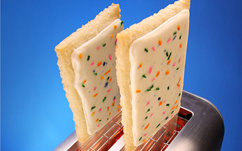
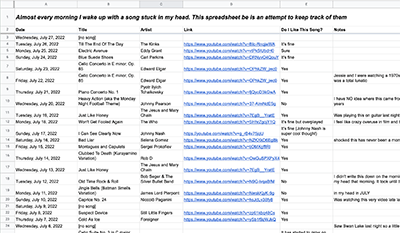

(click here for my bio)
Maxwell Neely-Cohen’s work has spanned writing, sound, performance, and technology. He is lucky enough to have been a Webby Award-nominee, an artist-in-residence at CultureHub and Pioneer Works, and a fellow at the Library Innovation Lab. His performances and experiments have been acclaimed by The New York Times Magazine, Frieze, and The Financial Times. He is currently the publisher of The HTML Review and a consulting dramaturg for the New York Choreographic Institute at New York City Ballet.(click here for some of what I've been up to)
Writing
 Generational Data Interviews for the Library Innovation Lab
Generational Data Interviews for the Library Innovation Lab
 Century-Scale Storage for the Library Innovation Lab
Century-Scale Storage for the Library Innovation Lab
Our Symphony for the Are.na Annual 2023
Color Story: Terminal Green for Ssense
The Chromatic Trip for BOMB
The Life and Death of LOVE Park for Buzzfeed READER
NBA Twitter is Changing the Way We Watch Sports for The New Republic
Brand Anorexia for Los Angeles Review of Books
Everybody's Doing It for The New Inquiry
Echo of the Boom
Performance, Movement, and Dramaturgy
 "A Solo Piano" at the New York Choreographic Institute
"A Solo Piano" at the New York Choreographic Institute
"Vanishing Point" at the New York Choreographic Institute
Sound Design
 Skateboarding as a Movement Language
Skateboarding as a Movement Language
Performing Hannah Weiner's Code Poems
Synthesized Movement Lab
Experiments and Prototypes
the html review10,000 Drum Machines
Street Writer
Live Coding
 Read To Me
Read To Me
Personal Archives, Libraries, and Journals
My digitized closet (inspired by Clueless) A spreadsheet of the songs stuck in my head in the morning
A friendly neighborhood playlist
My record collection